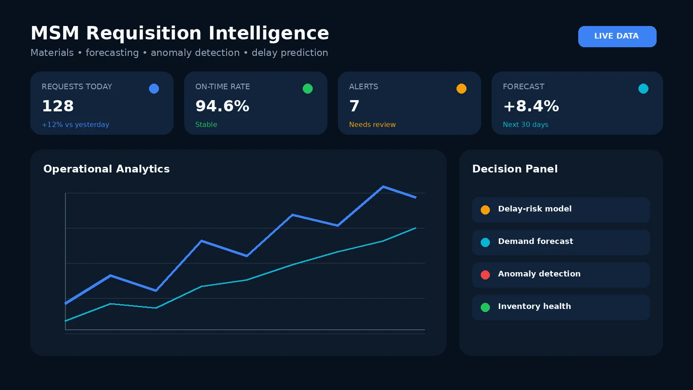
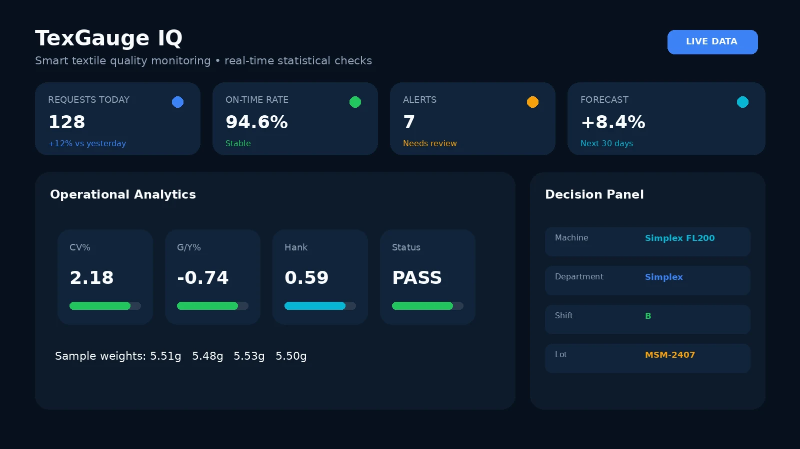
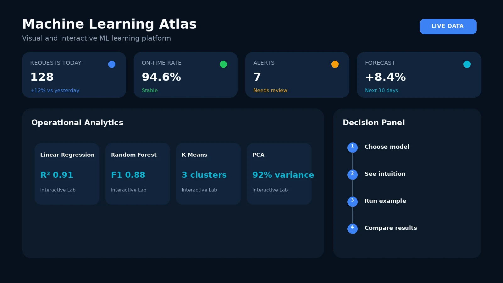

Final Year Project
MSM Digital Material Requisition System
A role-based workflow for material requests, approvals, tracking and planning analytics.
View project →Data Analytics • Python Development • Machine Learning • BS Mathematics
BS Mathematics student with hands-on experience in data analysis, Python development and workflow automation for industrial use cases.
Industrial workflows, quality monitoring and machine-learning education built with Python, data tools and web technologies.

A role-based workflow for material requests, approvals, tracking and planning analytics.
View project →
Real-time textile quality monitoring for sample weights, CV%, G/Y%, Hank Roving and pass/fail decisions.
View project →
A visual, interactive learning platform designed to make ML concepts easier to explore and compare.
Open live site →HEC Need-Based ScholarshipUndergraduate academic support
Prime Minister's Youth Laptop SchemeMerit-based technology award
I am seeking roles where careful analysis and reliable software support better operational decisions.